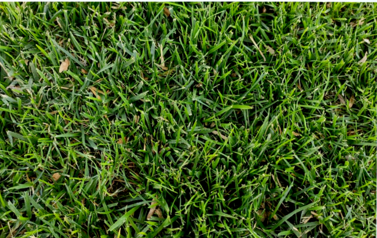
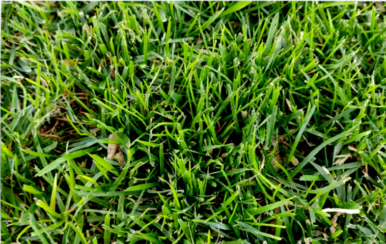
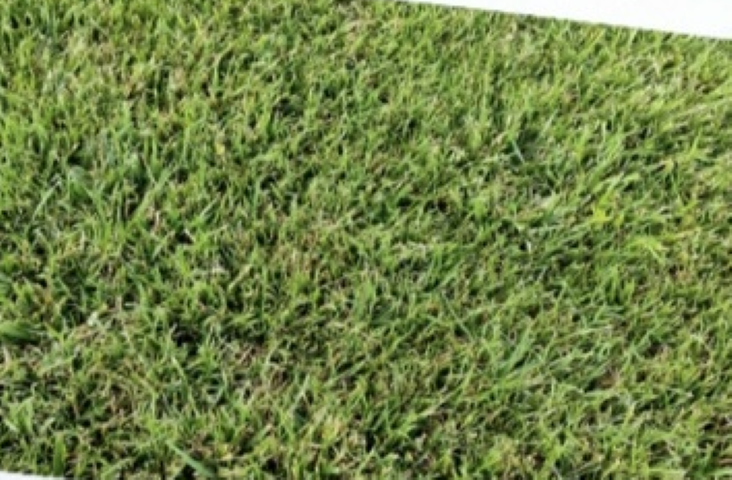

BENEFICIOS DE ELEGIR NUESTRO PRODUCTO
CONOCÉ NUESTRAS VARIEDADES
BERMUDA
Césped de mayor rusticidad. Posee rizomas los cuales ayudan a la expansión y colonización del terreno. De color verde vivaz, es una variedad estival, su color verde intenso se mantiene hasta las primeras heladas, donde comienza su periodo de reposo y toma a un tono amarillo otoñal. Variedad de bajo mantenimiento. Soporta alto tránsito
FESTUCA
Césped de una textura más gruesa y firme. Requiere bajo mantenimiento y posee buena rusticidad. Esta especie mantiene un color verde intenso todo el año y es especial para jardines con alto tránsito. Es muy tolerante el frío y requiere riego frecuente, especialmente en primavera-verano.
EXCEL CUYO
Variedad de color verde todo el año, de textura fina y suave. Resistente a las heladas, requiere de abundante riesgo durante el período primavera-verano. Ideal tanto para sol como para sombra. Recomendable para tránsito medio.